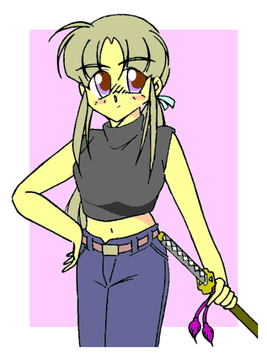

五月も過ぎようとしているこの頃、ある施設にて。
「はあ、はあ、はあ……」
すててててて……
遠くに走り去っていく足音。
その方向を睨みつけながら、息を切らしている少女が一人。
髪は美しく長い銀髪で、それを無地の紐で首辺りで束ねている。１５歳くらいか、やや幼げながらも整った顔立ち。
服装は、ジーンズの上に黒いノースリーブ一枚。
「く――くそぅ……次こそ、は……はあ……絶対、捕まえ、て……はあ……やるから、なぁ……はあ……」
手にした長い日本刀を握り締め、少女――黄路疾風は息も絶え絶えそう呟いた。
ハンターストーリーランド+α
「疾風が行く？」
作：マコト
「――外へ？」
ここは秘密組織「ハンター」施設内のカフェテリア。
ハンター２８号――半田双葉は、パフェを食べながらそう尋ねた。
「ああ。よくよく考えたら、俺はここに来て二回ほどしかこの辺りを歩いたことがない。その時はとんでもない目に遭ったがな。……まぁ、それで今度は一人でまわってみようと思ったわけだ」
「ふぅん……で、なんで私に？」
「ほら、君は伊奈やいちごを除けば只一人の現役女子高生じゃないか。何かお薦めの場所やらを知ってないかと思ってね」
「なるほどなるほど……」
クリームをほおばりつつ、疾風の答えに頷く双葉。
山のようにあったパフェは、いまや半分程度になっていた。
「――いいわよ、色々おしえてあげる！」
「ありがとう。感謝するよ」
「でもその代わり――」
「？」
すると双葉はにっこりと笑い、
「今日、奢ってね♪」
「……」
疾風は手にしたがまぐちを覗き込む。
「……！」
そして頭を抱え込むのだった……
「何々、『まずはこの通りを進むべし。色々な店があるので、とことん入るべし』
……とな」
双葉から渡されたノートを読みつつ、疾風はハンター施設の近くにある街中を歩き回っていた。
「――だが、この通りは……」
疾風はげんなりとした表情で立ち止まる。
なぜならば……
「ブティック、化粧品店、ヌイグルミ屋、エステサロン、美容院、宝石店、ブランド店、ランジェリーショップ……」
そう、その通りにある店は皆、女性向けの店ばかりだったのだ！！
「……はめたな双葉」
恨みがましい目で虚空を見つめる疾風。
本当はこういう場所ではなく、有名スポットやもっと大衆的な場所を教えてもらいたかったのである。
「仕方ない。ここまで来たのだ、覗いてみようか」
そう呟くと、疾風は通りを歩き出した。
「いらっしゃいませー」
最初に入ったのはランジェリーショップ。
実を言うと、疾風は女性化してからというもの、色々な人からのお下がりで生活していたのだ。
おまけにちゃんとした下着をつけないので、以前、双葉や水野達に怒られたことがある。
「たまには自分で買わねばな……」
疾風には、自分が男性であったことへの執着心などカケラもない。
要は、“彼女”と「対等」になれさえすればいいのだ。
「とはいえ、どのようなものを買うべきか……あ、確か双葉のノートに書いてあったか？」
思い出したようにページをめくる。
「――お、あったあった。何々……『下着はとにもかくにも可愛いものを。一枚は勝負系を買うべし』
……か。だが、可愛いものといわれてもな……」
長い間「男」だったのだ、そんなものどう判断できようか。
それに、「勝負系」とは何であろ？
首をかしげながら、疾風は店員に尋ねてみることにした。
偶然にもすぐそばに店員がいた。
「あの、すみません」
「はい。どうされましたか、お客様？」
大人の色気溢れる女性店員が、疾風の言葉に応じた。
「あの……か、可愛い系の下着なるものを選びたいのですが……俺――私にはちょっと……」
すると、店員さんの目がキラーンと妖しく光った。
「分かりました。では私が選んで差し上げますので、どうぞこちらへっ♪」
「え？ いや、その……ちょっとぉ！？」
はっしと手を掴まれ、疾風はそのまま試着室へと「連行」されるのであった……
「ありがとうございました〜♪」
「…………」
店員の声を背に、疾風は店の外で呆然となっていた。
何故か？ その理由はご察しの通りである。
手には大きな紙袋。
あれよあれよという間に、“色々”と買わされていたのであった。
「――はっ！？ い、いかんいかん！ この程度では、千景のヤツに笑われてしまうっ！ ……ええい、気を取り直して次の店だっ！」
そうして今度は、何故かファンシーショップへと入っていく……
「ぬいぐるみ、か……。伊奈や燈子にひとつずつ買っていこうかな？」
疾風は店内に置かれた多種多様なぬいぐるみを見て、そう呟いた。
ちなみに伊奈――１７号は小学生の少女にされてしまった、元殺人鬼のハンター。
燈子――１０号は教育指導主任の、美人教師風にされてしまったハンターである。
伊奈はともかく、燈子は典型的な体育会系性格であり、ぬいぐるみは全く似合わない。
しかし疾風は数日前に、燈子が狐のぬいぐるみを抱きしめて幸せそうにしているのを、偶然にも目撃していたのだった。
「伊奈はチャッキーの、燈子は狐のでいいか…………ん？」
ふと目をやると、そこには可愛らしい猫のヌイグルミがあった。
どことなく、某小学高校生のお父さんのような形状である。
「…………」
疾風の目の色が変わる。
何かが、彼女の中で動いた。
次の瞬間、彼女はそのぬいぐるみも手にして、即座にレジへと並ぶのだった……
「次はここへ行くか。――にしても、ずいぶんと荷物が増えたなぁ……」
元々体力はそんなに落ちてないので、疾風にはこの程度の荷物は苦にならない。
そんなこんなで次に入ったのは……化粧品のお店だった。
「ふむふむ、『コスメは肌に合うものを選ぶべし。まだ少女なのだから、紫の口紅などケバ系は避けるべし』か。――しかし、化粧もあまり分からんぞ？」
やはりここは店員に聞くべきである。
しかし、疾風は躊躇った。また先ほどの二の舞になったら……
「あれ？ 疾風さんじゃないですかぁ」
「む？」
ほえほえとした声。聞こえてきた方へと顔を向ける。
「みぃ……か。何でここに？」
そう、そこにいたのは、ハンター３１号にして生体アンドロイドＡＫＦ−Ｔｙｐｅ３１――「みぃ」こと石川美依であった。
「私もちゃんとお化粧とかするんですよぅ。アンドロイドでもお肌に気を使うんですからぁ」
「そ、そうなのか……知らなかった。そうだ、丁度いい。……みぃ、よければ俺のも選んでくれないだろうか？」
アンドロイドとはいえ知り合いの女の子。
疾風が頼むにはうってつけであった。
「ほぇ？ いいですよぉ。じゃあ、ちょっと待っててくださいねぇ」
そう言うと、みぃは商品棚へと向かう。暫くして、いろいろな小瓶をかかえて戻ってきた。
そのままレジへ並ぶ。
「あ、お金は俺が――」
「大丈夫ですよぅ。お父様からお小遣い６００万円ほど貰ってますからぁ」
「ぶっ……！ あ、相変わらず、まさに桁違いだな……」
みぃの父――つまり製作者であるハンター１４号石川恭介は、超巨大財閥の長男である。
もっとも、家を継ぐのは弟らしいのだが。
「ありがとうございました」
会計を済ませ、みぃが駆け寄ってくる。
「はぃ、これですぅ」
彼女は紙袋を疾風に手渡した。
「ああ、ありがとう。助かった」
「いえいえ。お礼はあなたで…………お化粧させてくださいっ！」
「いっ！？」
そのまま疾風はトイレへと連行されるのであった……
「じゃあまた遊びましょぉねぇ〜」
店を出て、疾風はみぃと別れた。
「……はは、はははは……」
引き攣った笑いを浮かべる疾風。
その顔は、ナチュラルながらも綺麗に化粧されていた……
「今日はここで最後にするか……」
疾風は宝石店へと入る。
「うわぁ……」
そこは、きらびやかな宝石がショーケースで輝く、装いも見事な宝石店であった。
「凄いな……って、なぬ！？」
ショーケースの中の値段を見て、驚愕する疾風。
とてもではないが、彼女の所持金で買えるような代物ではなかった。
「ぬぅ……本当にこんなものを女性が好むのか……？」
少なくとも、自分で買う機会はあまり無さそうである。
などと考えていると、
ダダダダッ！ バンッ！！
けたたましい音を立てて、数人の男が入ってきた。
全員、目出し帽を被り、手には一般には普通出まわらないような銃器。
「全員床に伏せろっ！」
そのうちの一人が、銃を手に声を荒らげた。
（……強盗！？）
疾風は瞬時に床に倒れる。――背中の刀袋に手をかけながら。
「そこの娘、こっちへ来いっ！」
「……っ！？」
男は疾風の方を見て叫んだ。
（くっ……俺を人質にでもする気か？）
仕方ない。疾風は立ち上がると、強盗の方へゆっくりと歩を進めた。
無論、刀袋の口を緩めながら。
ちなみに背中に荷物を背負っているので、刀袋は見えにくい。
そのまま、彼女は男に肩をつかまれた。
「いいかぁ！ 警察を呼ぶなよ、さもなきゃこの娘の命はないからなぁ！」
そう言うと、強盗達はショーケースを壊し始めた。
飛び交う悲鳴。
暫くして、強盗達は完全に店内の宝石を取り終えた。
「よし、ずらかるぞ！ その娘も連れて行け！ 人質だ！」
そう言って男達は脱出を図る。
その時、疾風の手を引っ張ろうとした男の手が、彼女の胸に触れた。
ぽよん♪
「んっ……！ ――って、きっさっまっらぁぁぁぁぁぁぁぁぁぁぁぁぁぁぁ！！」
ぷっちん。
疾風の中で何かが切れた。
「ふんっ！」
バッ！！
「！？」
彼女は瞬時に手を振り解き、刀袋の紐を解いて柄を引く。
すぐさま、刀身が姿を現す。
模擬刀「かねしげ。」。
稀代の銘刀「四代兼重」のなれの果てである。
刀身は金属でこそあるが、刃はついていない。だが……
「よくもこの俺を辱めてくれたな……覚悟しろっ、成敗！！」
疾風は刀を構え、強盗達に向かって駆け出した。
「――う、撃てッ！！」
恐らくはリーダーであろう、その男の号令の元、他の男達は一斉に銃――マシンガンを構える。
やや古めの型だが、撃たれれば 普通人間は即死する。
号砲一閃。
ズダダダダダダダダダダッ！！
銃弾の雨が疾風に降り注ぐ！！
――だが。
「！？」
驚きは強盗達だけのものではない。
疾風を除く、その場に居合わせた全員の目が点になった。
キキキキキキキキキキキキキキキィンッ！！
降りしきる弾丸。
それをあろうことか、疾風は目に見えぬ刀裁きで全弾斬りおとしているのだ！
「笑止！ この程度の弾、よけられずに何が剣豪かっ！ それに、アイツの弾の方がもっと鋭く速いわ！！」
そう、 疾風は知っている。
こんなただ弾を撃ちつけるだけの輩など、比べ物にならないような銃技を持つ者を。
彼女と比べれば、こんな弾など、児戯も同然――！！
「ば、馬鹿な――！？」
うろたえる強盗の一人。
刹那。
「貰った！」
「……っ！？」
一瞬、疾風の姿が消える。
そして、
「覇ッ！！」
ゴキッ！！
「がはっ……！？」
一人が崩れ落ちる。
瞬時に懐に飛び込んでいた疾風は、下から「かねしげ。」を一気に薙ぎ、男の首へ叩きつけたのだった。
「な――」
「遅い」
「え――」
驚愕の間を与えることもなく。
ゴッ！！
疾風は二人目を地に叩き伏せた。
残るは三人。
「な、何だこいつ――！？」
恐怖に顔を引き攣らせつつ、リーダー格はあわてて外へと逃げ出した。
疾風を牽制しつつ、残りの二人も外へ飛び出す。
「待て！！」
後を追う疾風。
しかし、
ガォォォォン……！！
外に出たときには、既に強盗達は車で逃走を図っていた。
「逃さん！」
そう吠えると、疾風は刀を正面に構えた。
「鬼・神・覚・醒、斬！！」
シュバァァァァァァッ！！
気合と共に振られた刀から、巨大な光の刃が打ち出される。
そして、その光は逃走する車へと直進していく。
「んな馬鹿なぁぁぁぁぁぁ！？」
悲鳴をあげる強盗達。
刹那、
ゴォォォォォォォン！！
憐れ、強盗団の車は爆発四散した。
「む……ムチャクチャだ……」
リーダーは黒焦げになりながらもうめいていた。
「疾風ーっ」
「あ、いちご」
パトカーのサイレンが鳴り響く中、疾風の元にいちご達ハンターがやってきた。
「これ一体どうしたんだ？ 出動命令があって来たけど、もうこんなになってたんだが……」
「ふっ……」
すると、疾風はくるりと後ろを向き、手を腰に当て、言った。
「この俺を怒らせればこういうことになるのだ！」
高らかに笑う疾風。
すると、
「あれ、疾風ちゃん、その荷物は？」
「はっはっはっは――は！？」
双葉に言われて気付く。
背負っていた荷物入れからは、ヌイグルミが飛び出ていた。
それも、疾風が目ざとく買った、猫のヌイグルミであった。
「ほほぅ、疾風、お前ヌイグルミ趣味があったのか……」
負傷者の手当てに来ていたハンター１００号――半田百恵が意地悪くそう言う。
「ちっ、違うんだ、これは！！」
「あら、よく見たら……何時の間にか化粧してるじゃない！」
「これはみぃが……」
「お、こっちは――うわ、どピンクの下着……」
「あ゛ーっ、勝手に人の荷物を開けるなぁぁぁぁぁぁぁっ！！」
「――で、疾風はどうした？」
「はぁ、部屋に引き篭っております」
「やっぱりか……。結局、あいつも女になるということに対して羞恥心があるんじゃないか」
「そのようですな。別に男に戻りたい、というわけではないようですから、単に慣れないだけでしょうけれども」
「うむ。しかし、早く立ち直ってもらわねば。彼奴の剣道教室は職員に好評だからな。――ん？ 燈子も修行の旅に出たのか？」
「ええ。疾風に皆の前で堂々とヌイグルミをプレゼントされたのが効いたのでしょうか？」
「――別に趣味についてとやかく言うつもりはないのだがなぁ。何の修行に出たんだか」
あとがき
こんにちは。マコトです。
今回は黄路疾風をメインにしたお話です。
やっぱ剣豪だし、それらしいところ見せてあげないとなーってｗ
さて、次回は久しぶりに「Am I Girl!?」を投稿する予定です。是非応援お願いいたします。
それでは、しーゆーあげいん☆

□ 感想はこちらに □